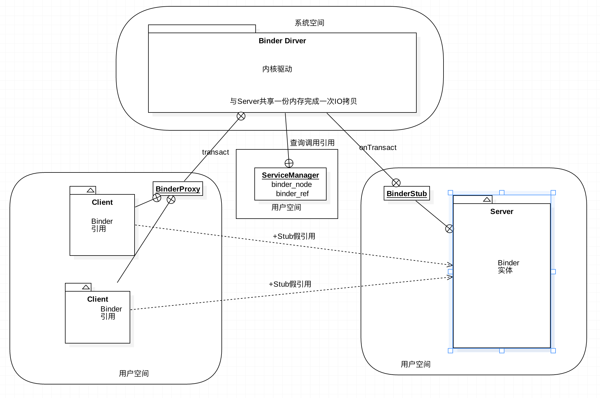

知识总结 插件化学习 Binder机制原理
Binder是android系统特有IPC方式，安卓平台中的各种服务交互基本都是Binder机制实现，理解和掌握Binder机制的实现原理可有效提升软件性能优化点，同时Binder机制的应用也是动态代理方式实现插件化基础。

安卓插件化学习 Binder机制原理分析
网上虽然已有很多Binder类似的优秀分析，本文处于自我学习目的，把我学理解和认识的东西记录一下。
Binder属于android平台特有的IPC通道，也是进程间数据交互的核心内容。
安卓平台IPC方式总的来说有5种：1、文件操作；2、Messenger；3、Provider; 4、AIDL；5、Socket。
这五种方式中，2、3、4的实现都用到了Binder机制，这里主要以AIDL的使用讲解Binder。
Binder设计结构理解
1、通信进程两端两个重要对象：一个是本地端的Proxy远程引用对象，一个是远程端的Stub实体对象
2、client端Proxy对象可以根据所定义的继承IInterface接口的相关约定方法来操作server端Stub实体类。
3、Android中在使用系统服务的时候通过getSystemService方法获取到的其实都是Stub把远端的Binder转化的对象，因为系统服务都是在system_server进程中，所以肯定是跨进程获取对象的，那么这个Binder对象其实就是上面的Proxy对象
4、除client和Proxy进程外，还存在者一个serverManager所在的进程（0号引用获取），用来存储proxy引用与stub实体的对应关系。
5、简单理解：ProxyBinder的transact方法调用后会同步（可异步）调用到Stub类的onTransact.这中间进程间数据的一次拷贝都是在系统空间的Binder驱动中完成。

Binder的使用
Binder的使用基本存在与多进程的App中，大家工作的项目中很可能甚少接触底层数据在进程间的传递，特别是业务需求多的应用。然后本地工具类应用如卫士类的产品研发会很经常的应用到Binder，并且会在不同的场合自定义Binder的数据传递方式，这里也很感谢之前工作项目“手机卫士”的实际应用机会。
标准AIDL使用Binder
AIDL（ Android Interface definition language）安卓进程间通信接口语言，我们可以通过这种方式定义接口，完成两个或多个进程间的信息传递。
1. 定义.aidl 接口文件
首先要定义进程间需要完成什么操作，传递什么数据，根据需求定义方法接口。
|
|
2. 编译项目生产java文件
定义完.aidl 文件有，通过as build项目后，IDE会帮我们生产对应的java文件在gen目录下。
|
|
3. 定义远端实体对象
|
|
继承Stub类实现方法，并且通过Service的onBind（）或Provider的call（）提供接口返回给client端。
当然，也可以不定义aidl文件，自己定义Stub类及proxy类，好处是按照自己的需求自定义Stub的达到自定义Parcel读取方式及实现逻辑来解决一些业务需求问题，比如复杂继承类的传递。
4. Client端获取远端ProxyBinder
3中定义好Binder对象后，这个Binder就可以跨进程调用类，获取这个远端binder引用的方法有很多，利用Service启动方法中的ServiceConnection来返回onBinder里的对象。或者用Provider的call根据标记返回指定Binder对象（封装在Bundle中）。
安卓源码ServiceManager分析
ServiceManager是一个全局的manager、调用了Jni函数，实现addServicew getService checkService listService等函数，
Server进程先注册一些service到SercviceManager中。
Client想获得一些service，就要到Service中去获取该Service。
这样，Server和Client之间就可以进行通讯了，
Server和Client之间的通讯都是通过Binder进行的。
——————
欢迎转载，请标明出处：常兴E站 www.canking.win